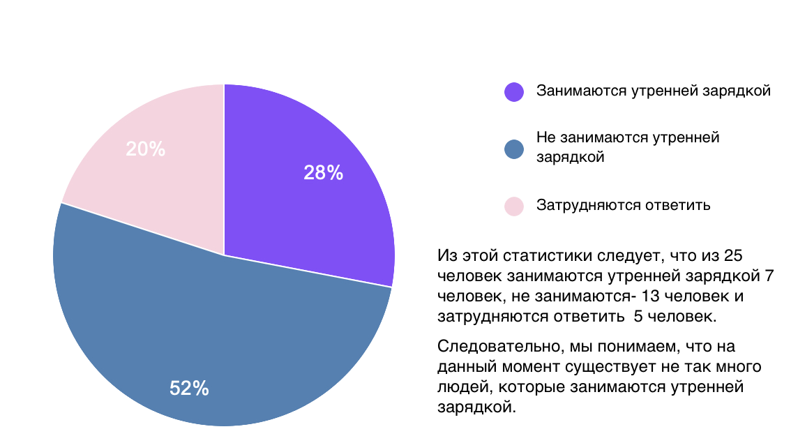

Для того, чтобы убедиться в актуальности выбранной темы, мною был проведен социальный опрос среди школьников средней школы.
Задаваемые вопросы:
- Занимаетесь ли вы утренней зарядкой?
- Вы занимаетесь утренней зарядкой регулярно?
- Сколько времени вы тратите на утреннюю зарядку?
- Где вы обычно проводите утреннюю зарядку (дома, в школе, на улице и т.д.)?
- Какие упражнения вы предпочитаете включать в утреннюю зарядку?
- Что мотивирует вас заниматься утренней зарядкой?
- Есть ли у вас определенная программа утренней зарядки, которую вы следуете?
- Какие трудности или преграды мешают вам заниматься утренней зарядкой?
- Как вы думаете, какие преимущества приносит утренняя зарядка для вашего физического и психического здоровья?
- Что бы вы хотели видеть в утренней зарядке в вашей школе, чтобы она стала более привлекательной?
- Какие изменения или улучшения вы бы предложили в программе утренней зарядки в вашей школе?